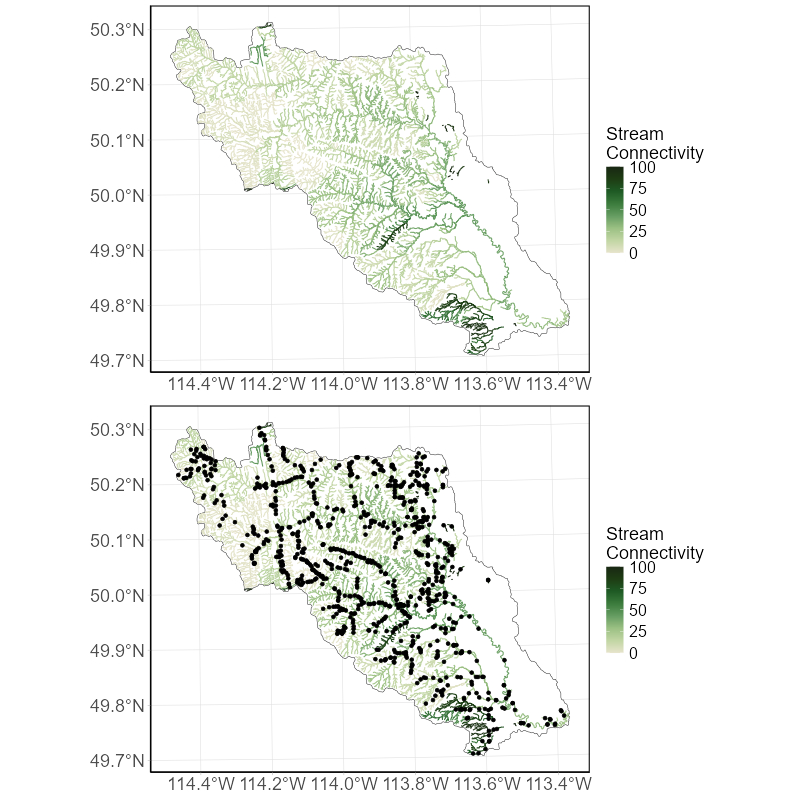
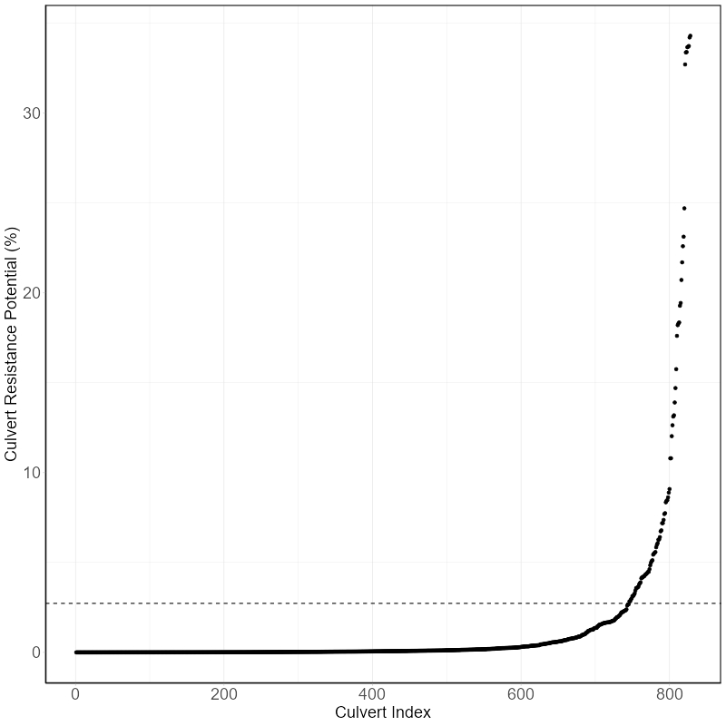
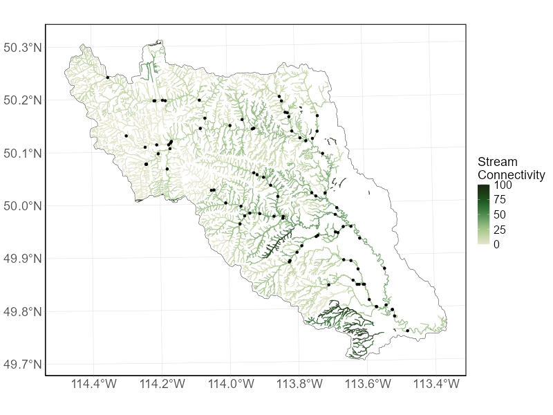

5 Applications
We have highlighted three applications of the Stream connectivity indicator that can provide supplementary information to decision makers.
5.1 Tracking of indicator condition
This indicator was developed with the intent to be applicable at a regional (i.e., major watersheds) or provincial scale. However, this indicator can be calculated at smaller spatial scales (e.g., sub-watersheds such as HUC 8), and can incorporate measures of habitat quality (e.g., sedimentation, water temperature), and species-specific dispersal distances (e.g., Westslope Cutthroat Trout (Oncorhynchus clarkii lewisi), Athabasca Rainbow Trout (Oncorhynchus mykiss), Bull Trout (Salvelinus confluentus)). Habitat quality data is often only available for limited geographical areas or specific species and not typically possible to incorporate at a larger scale. Incorporating measures of quality can give important insights for land and water management decisions in a specific area.
To incorporate habitat quality (\(Q\)) or locations of natural barriers \(P^{Nat}\), two additional terms are added to the equations (Table 2):
\(A_{jt} = \sum_{i=1}^{n} (S_{i} * \theta_{it} * P_{ij}^{Nat} * D_{ij})\)
\(A_{Bjt} = \sum_{i=1}^{n} (S_{i} * \theta_{it} * P_{ij}^{Nat} * P_{ij}^{Art} * D_{ij})\)
\(A_{Bjt} = \frac{\sum_{j=1}^{n} (S_{j} * Q_{j} * C{j})}{\sum_{j=1}^{n} (S_{j} * Q_{j})}\)
Table 2. Definitions for variables included in the modified version of the index.
| Variable | Definition |
|---|---|
| \(Q_{it}\) | Quality of habitat type \(t\) in stream segment \(i\) |
| \(\bar{Q_{it}}\) | The average quality of habitat type \(t\) in segment \(j\) (\(\sum_{t=1}^{m} (\theta_{it} * Q_{jt})\)) |
| \(P_{ij}^{Nat}\) | Cumulative probability of passability of natural barriers between stream segments \(i\) and \(j\) |
5.2 Connectivity of individual stream segments
In addition to reporting on the status of each watershed, we can visualize how connected individual stream segments are within the network. This information can be used to prioritize culvert surveys across each watershed to confirm that these barriers to connectivity are present on the landscape.

5.3 Culvert resistance potential
The Culvert Resistance Potential (\(CRP\)) metric is a decision support tool aimed at helping users identify culverts that can have a disproportionately large impact on the Stream connectivity indicator. The CRP metric is based on the same methodology as the Stream connectivity indicator and is calculated as the change in stream connectivity (\(SC\)) between when a focal culvert is completely blocked (\(SC_b\)) or passable (\(SC_p\)).
The \(CRP\) metric is dependent on four properties:
1. The location of the culvert within the stream network;
The types and amounts of surrounding habitat (Strahler order, stream length);
The scale of analysis (e.g., HUC 2 vs. HUC 6) as it impacts a culvert’s relative position within the stream network; and
If we identify the culverts impact based on the current status of connectivity within the focal watershed, or its maximum potential impact assuming all other road-stream crossings within the region are passable. Using an example watershed, the CRP metric can be used to prioritize surveys at locations which are predicted to have the largest potential impact on stream connectivity if they become blocked and inform how often inspection revisits should occur.


5.4 Culvert prioritization
Until a complete inventory of stream crossings is available throughout Alberta, we can use the culvert passability model to identify predicted road-stream intersections (i.e., culverts) that are currently at high risk of being, or becoming, hanging. This information can be used to direct surveys to locations where we suspect hanging culverts to be occurring. All predictions from the model are masked based on the criteria identified in the methods section.
It is important to note that the summaries made publicly available through GeoDiscover Alberta can be used to answer questions about indicator condition at a broad scale. However, to answer questions about the status of stream connectivity in smaller geographic regions, incorporate measures of habitat quality, report on connectivity of individual stream segments, understand what is driving the observed changes in condition, or identify priority culverts for restoration require additional analyses. The code to support this type of work is publicly available through the a GitHub repository.